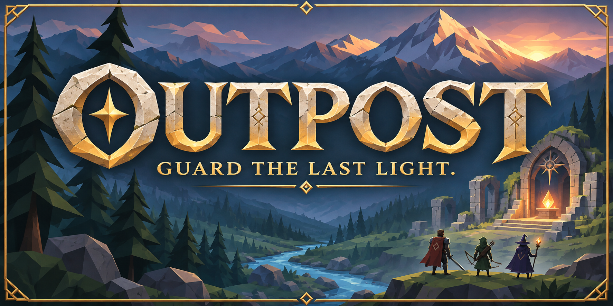
The field guide
Six survivors are stranded beyond Aethelgard. Choose your weapons and bring them home.
Classes & equipment
Your mentor gives you your first weapon. Return to their workshop to forge each upgrade and buy armor one piece at a time.
Weapons
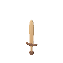
Starter Sword
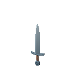
Forged Longsword
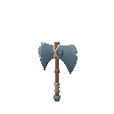
Runic Waraxe
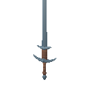
Legendary Dawnblade
Iron armor
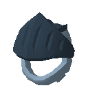
Iron Helmet
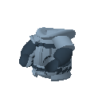
Iron Chestplate
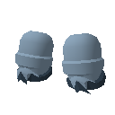
Iron Greaves
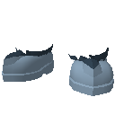
Iron Boots
Runic armor
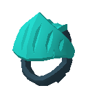
Runic Helmet
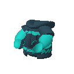
Runic Chestplate
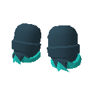
Runic Greaves
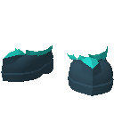
Runic Boots
Dawnsteel armor
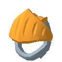
Dawnsteel Helmet
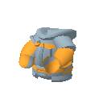
Dawnsteel Chestplate
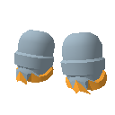
Dawnsteel Greaves
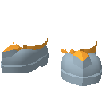
Dawnsteel Boots
Weapons
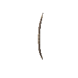
Starter Bow
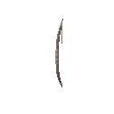
Forged Bow
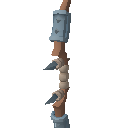
Runic Hand Crossbow
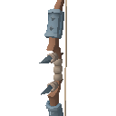
Legendary Siege Crossbow
Iron armor
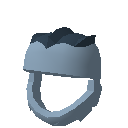
Iron Helmet
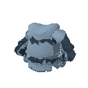
Iron Chestplate
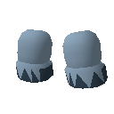
Iron Greaves
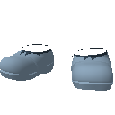
Iron Boots
Runic armor
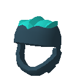
Runic Helmet
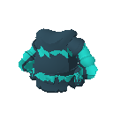
Runic Chestplate
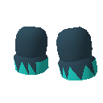
Runic Greaves
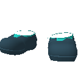
Runic Boots
Dawnsteel armor
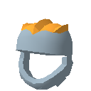
Dawnsteel Helmet
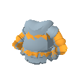
Dawnsteel Chestplate
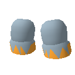
Dawnsteel Greaves
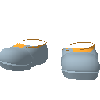
Dawnsteel Boots
Weapons
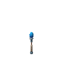
Starter Staff
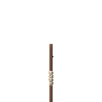
Forged Wand
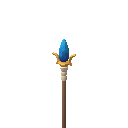
Runic Staff
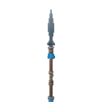
Legendary Dawnweaver
Iron armor
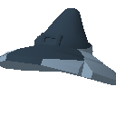
Iron Helmet
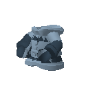
Iron Chestplate
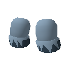
Iron Greaves
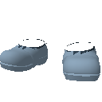
Iron Boots
Runic armor
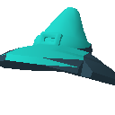
Runic Helmet
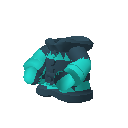
Runic Chestplate
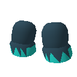
Runic Greaves
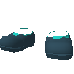
Runic Boots
Dawnsteel armor
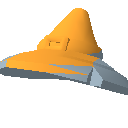
Dawnsteel Helmet
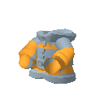
Dawnsteel Chestplate
Dawnsteel Greaves
Dawnsteel Boots
The northern road
Ember MeadowThe Last Ember · Waves 1–4
Ash CemeteryThe Ash Warden · Wave 5
Frozen PassRoad to Dawn · Waves 6–9
Hollow NecropolisThe Hollow King · Wave 10
Bosses
Ash WardenKeeper of the mountain passage. Watch the ground when his axe rises.
Hollow KingAt the frozen throne, leave room to dodge his rush and soul sigils.
Enemies in the field
Valley raiders
 Raider
Scout
Brute
Archer
Shaman
Raider
Scout
Brute
Archer
Shaman
The undead
Boneguard
Rattlescout
Frost Reaver
Bone Archer
Frost Hexer
Aethelgard Citadel
Follow the avenue from the castle to the South Gate. Stop in Market Square for supplies before the next expedition.
Castle overlook
Market Square
The forge
Arcanist’s sanctum
Archery range
South Gate
People of the citadel
Mentors & townsfolk
Goran the Iron HandWarrior mentor
Diana the HuntressArcher mentor
Lady ElyndraMage mentor
TorvaldCaravan merchant
Commander SeanExpedition gatekeeper
Survivors you can bring home
BramWoodcutter
KaelenScout
RowanHerbalist
TheronMason
MiraWeaver
OwenBaker